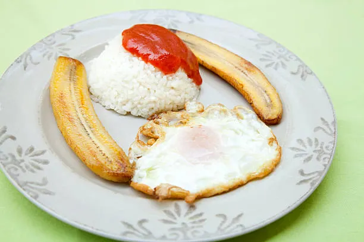

Ingredientes: Arroz, Salsa de tomate, platano macho, huevo.
Para hacer esta sencilla receta solo tienes que hacer arroz freír uno o dos huevos y freír el plátano. Luego con salsa de tomate le hechas al gusto.